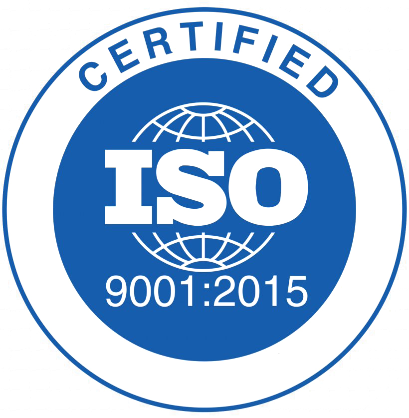
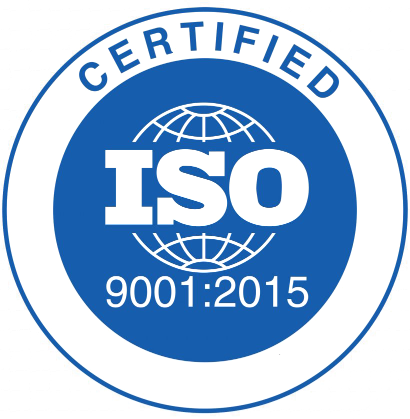
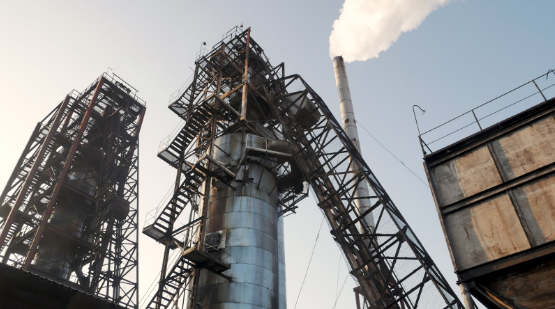

Environmentalists deny wastewater and air pollution by ALC "Perechin Timber & Chemical Plant"
At the numerous requests of the Perechin community in December 6 th, 2019 an independent laboratory of the Private Research and Development enterprise "Ecology" was invited to the city. It carried out air sampling to determine the concentration of pollutants in the surface layer of atmospheric air at 5 points in Perechin along the sanitary protection zone of the timber and chemical plant.
Also, for more detailed investigation, samples were taken at school and on Narodna Square. The laboratory verified the presence of the following substances in the atmosphere: nitrogen dioxide, carbon monoxide, acetic acid, phenol, formaldehyde etc.
The conclusions are firm - no exceedance of the limit values at any point has been detected.
Ecologists put emphasis on opportunity to check through one's individual effort the air condition and urge all conscious citizens to monitor the level of emissions of harmful substances into the river from open official independent sources and to check information from the State Agency of Water Resources of Ukraine (http://monitoring.davr.gov.ua/).
For checking purposes the quality of water, there is a Clean Water project (http://texty.org.ua/water/), implemented and funded with the support by independent agency of the US Federal Government (https://www.usaid.gov/), non-profit organization "Eurasia Foundation" (https://www.eurasia.org/).
You can use the open source information SaveEcoBot (a free service to the public developed by the Save Dnipro activist group) to monitor and analyze the air condition (https://www.saveecobot.com/).